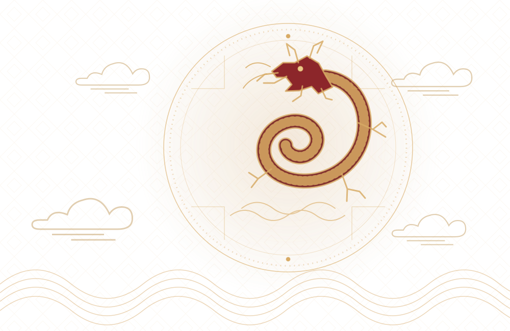

출국 · 01.16 SATMU · T1
ICN08:30인천 T1
1h 50m✈
TAO09:20칭다오 자오둥
공항 도착 목표 05:30 KST

예약은 완료, 이제 출발 준비.
Himalayas Hotel Qingdao · 青岛证大喜玛拉雅酒店
일반 체크인 14:00 / 체크아웃 12:00 이전. 객실 배정·추가요금·짐 보관 재확인.
현재 확인된 한국 일반여권 무비자 정책은 2026.12.31까지. 2027년 연장 공지를 확인하고, 필요 시 관광 L비자 신청.
항공사 중국동방항공(MU) · 모든 항공편 시간은 현지시간 · 중국은 한국보다 1시간 느림 · 여행자보험 가입 완료.
날짜별로 확인하고 체크하면 이 브라우저에 저장됩니다.
공통 완료 사항은 미리 체크되어 있습니다.
날짜 탭으로 이동. 일정은 현지 상황에 따라 유동적으로.
새벽 출발 후 호텔에서 여유롭게 적응. 강풍이면 실내 쇼핑으로 전환.
잔교에서 시작해 유럽풍 건축과 골목을 거쳐 타이동 야시장으로. 일요일 성당 내부 관람은 미사 일정에 따라 제한 가능.
완샹청 3시간 이상 확보. 순생 투어·팔대관은 운영 여부와 쇼핑 상황에 맞춰 조정.
마지막 점심과 기념품. 기상악화 시 쇼핑 생략 후 공항으로 먼저 이동.
필요한 항목만 펼쳐서 확인.
비자 2026년 말까지 관광 최장 30일 무비자. 2027년 연장 확인 전까지 무비자 전제 금지. 미연장 시 L비자 신청: 여권 원본·사본, 사진, 왕복 항공권, 호텔 예약, 일정표, 온라인 신청서 → 심사 → 여권 제출 → 발급·유효기간 확인. 비용·지문·처리기간은 비자센터 확인. 여권 2027.07.19 이후 권장. 왕복 일정은 240시간 경유 무비자 대상 아님.
중국동방항공 온라인 체크인 현재 공항별 안내 48시간~60분 전. 출국 1/14 08:30 KST부터, 귀국 1/17 18:10 CST(19:10 KST)부터 시도. 공식 사이트 → Online Check-in → 예약번호/전자항공권 번호 → 영문명·여권·편명·연락처 → 인접 좌석 → 탑승권 저장. 국제선 카운터에서 서류 확인·탑승권 재발급 필요. 실패 시 현장 체크인. 마감시간은 실제 예약편 우선(인천 카운터 50분 전·탑승구 20분 전, 칭다오 카운터 40~50분 전·탑승구 15분 전 참고).
입국신고서 1/15 두 사람 각각 무료 작성. 미작성 시 공항 현장 작성 가능. 여권·실제 MU 편명·귀국편·연락처·비자정보 준비.
제출 후 QR 또는 완료 화면 오프라인 저장. 현지: 하차 → 외국인 입국심사 → 여권·입국신고·필요시 지문/얼굴 확인 → 짐 수령 → 세관. 질문: Tourism / Four days / Himalayas Hotel Qingdao / January 19th, 2027.
T1 라운지 마티나(면세 4층 11·43번 게이트 인근, 현재 06:00~22:00), 스카이허브(4층 동·서편, 지점별 운영·브레이크타임 확인). 1인 3~6만원 예상. 카드 전월실적·동반인·무료 횟수·더라운지·Priority Pass·항공권 등급 확인. 무료 또는 할인권+45분 이상이면 고려, 정가+30분 미만이면 식당. 탑승동 셔틀·검색 지연 시 생략.
공항 교통 인천 새벽 예약택시·자가용 우선, 첫차·장기주차·셔틀 확인. 귀국 공항 밖 21:20~22:00 예상, 막차·택시 예비비 확보. 칭다오 공항↔호텔 택시 60~90분/170~250위안(차량), 지하철 8호선 및 환승 80~110분 이상/7~12위안(1인) 예상. 캐리어 2개라 공항 왕복 택시 추천. 시내는 도보·지하철·디디 혼용; 정식 승차구역·적재공간 확인, QR 불가 시 승차권 구매.
호텔 여권 2개·예약확인서·결제수단 지참. 얼리 체크인·추가요금·객실/침대·금연·조식·와이파이·보증금·무료 생수·미니바·청소·짐 보관·주숙등기(외국인 숙박등록) 확인. 입실 후 난방·온수·배수·침구·냄새·콘센트·잠금·금고·비상대피로·파손 점검. 문제는 사진 후 프런트 문의.
호텔 문의용: 您好！我们已预订2027年1月16日至19日的住宿，共两位客人，预计上午11点至12点到达。请问可以提前入住或免费寄存行李吗？押金是多少？可以使用支付宝付款吗？请为我们办理外国人住宿登记。谢谢！
식당·쇼핑·택시 결제. +82 가입 → 여권 인증 → Bank Cards → 해외카드 등록 → 결제 비밀번호 설정. Pay QR 제시 또는 Scan 매장 QR → 금액 확인 → 승인. 개인 QR/송금 제한 가능. 중복 결제 주의.
Alipay알리페이 내 DiDi 또는 앱 → 승차지·목적지 → 차종·요금 확인 → 호출 → 차량번호 대조 → 결제. 快车 일반 / 特惠快车 할인 / 出租车 택시 / 专车 상위 / 商务车 다인승. 통행료·대기·취소료·짐 공간 확인.
DiDi기타: Trip.com 입장권·숙소, 샤오홍슈 패션·카페, 메이퇀 배달·할인, 바이두지도, 카드사 앱, 더라운지, 카카오톡.
결제 알리페이 → 위챗페이 → 실물 해외카드 → 현금. 각자 카드 2장, 해외결제 차단 해제·DCC 차단·한도·수수료·ATM·문자 인증·분실번호 확인. 1인 현금 300~500위안, 2인 600~1,000위안(가정 210원/위안, 12.6~21만원). 소액권·분산 보관. 해외카드 QR 결제 200위안 이하 플랫폼 수수료 일반적으로 없음, 초과 시 3% 가능(500위안→15위안), 카드사 별도. 프로모션·최종 화면 확인. 결제 실패: 인터넷 → 카드 변경 → 위챗 → 실물카드 → 현금 → 카드사.
인터넷 해외 로밍형 eSIM 우선, 국내 통신사 로밍 또는 현지 유심 대안. 중국 5일권·하루 2GB 이상 또는 무제한·카카오톡/구글/유튜브/인스타 접속·테더링·속도제한·고객센터 확인. 두 사람 각각 확보. 설치: 기기 지원 확인 → QR 저장 → 와이파이 설치 → 여행용 회선 이름 지정 → 활성화 조건 확인. 도착 후 데이터 회선 여행용, 상품 안내대로 로밍 켜기, 한국 회선 데이터 로밍 및 자동전환 끄기. 한국 유심 문자용 유지 가능(전화요금 별도). 연결 테스트, QR 재사용 제한으로 임의 삭제 금지, 귀국 후 원복.
카페·음료: 루이싱 瑞幸咖啡, 쿠디 库迪咖啡, 헤이티 喜茶, 차지 霸王茶姬, 미쉐빙청 蜜雪冰城. 1인 예상 아침 15~30 / 면·만두 20~50 / 저녁 50~100 / 해산물·훠궈 80~150+ / 밀크티 10~30 / 카페 15~40위안. 1斤=일반적으로 500g, 중량·조리비·식기·차·물티슈 비용 및 알레르기·위생 확인.
쇼핑 중국 현지 패션·편집숍·디자이너·신발·가방·액세서리·빈티지·라이프스타일·캐릭터·화장품·기념품. DAY 1 리다 / DAY 2 대보도·타이동 / DAY 3 완샹청 3시간+ / DAY 4 간식·기념품.
브랜드 후보(입점 미확정): LI-NING 李宁, ANTA 安踏, ICICLE 之禾, JNBY 江南布衣, CROQUIS 速写, PEACEBIRD 太平鸟, MINISO 名创优品, POP MART 泡泡玛特, TOP TOY.
한국 가격·실측·착용·정품·결제 수수료·교환/환불·영수증·면세·수하물 확인. 관광객 세금환급: 지정 매장 확인 → 여권 → 환급 신청서·영수증 → 공항 세관·환급 창구. 최소금액·대상품목·창구 운영 및 위탁 전 확인 필요 여부 확인. 한국 면세한도와 별개.
1월 평년 최고 약 3~4℃, 최저 -2~-3℃. 해안 강풍·건조 주의. 1/9 중기예보 → 1/13 강풍 → 1/15 최종 → 매일 날씨·미세먼지. 야외 산책 대신 쇼핑몰·카페 가능. 중국 전원 220V/50Hz, 콘센트 형태 및 입력전압 확인.
수하물 기내: 여권·카드·현금·귀중품·전자기기·보조배터리·필수약. 위탁: 의류·신발·대용량 화장품·허용 주류/기념품. 기내 액체 개별 100ml 이하, 1L 투명 지퍼백, 면세 액체류 보안봉투·영수증 보관. 보조배터리는 위탁 금지, 100Wh 이하 표기 명확한 제품, 단자 절연·개별 보관, 손상·팽창·리콜품 금지. 기내 사용·충전 및 보관은 항공사 규정 준수. 3.7V 기준 10,000mAh=37Wh, 20,000=74Wh, 30,000=111Wh. 100Wh 초과 승인/제한 확인. 중국 국내선 3C 규정, 국제선 적용 여부 직전 확인. 캐리어 60~70%만 채우고 왕복 무게 측정·초과수하물 사전구매·태그 보관.
항공·숙소·보험 제외 · 2인 공동경비 기준.
2,600 CNY · 1인 기본경비 ₩273,000
쇼핑 시나리오는 1인 기준. 환율은 가정값으로 실시간 환율이 아님. 인천공항 교통·라운지·비자·호텔 보증금·추가 수하물·고가 쇼핑 및 면세품 별도. 환전액 중복 합산 금지.
공동: 식비·교통·공동 입장료. 개인: 의류·신발·화장품·기념품. 매일 저녁 결제자/사용처/위안/실제 원화 승인액/공동·개인 기록 후 귀국 정산.
A 담당 비자·입국·항공·호텔·공항교통·보험·라운지. B 담당 맛집·카페·관광예약·쇼핑·현지 교통·공동경비. 각자 여권·카드·결제앱·eSIM·입국신고·짐·개인 쇼핑비. 담당자는 협의, 중요 사항 교차 확인.
규정은 여행 직전에 다시 확인하세요.
현지에서 긴급상황 발생 시
별도 면세·연령 조건 적용. 개인 한도 합산 불가, 국내 출국 면세점 구매품 포함. 면세 초과·반입 제한·검역·신고 기준 외화 등 자진신고. 신고대상 없으면 일반적으로 신고서 생략. 육포·소시지·햄·육류·생과일·채소·종자·식물·일부 동물성 식품은 진공포장도 제한 가능, 검역 대상 반드시 신고. 과자·초콜릿·밀봉 차·잡화 등은 성분 확인.
Q-CODE 일반 검역관리지역 관련 증상 시, 중점검역관리지역 증상 무관 신고. 2027년 1분기 산둥성 지정 여부 확인. 필요시 여권·항공편·귀국일·방문지역·국내주소·연락처·건강상태 입력 후 QR 저장 또는 현장 신고.
보험 가입 완료: 증서·사고접수번호 저장, 의료비·자기부담금·도난/파손·지연 보장 확인. 질병·부상: 일정 중단 → 120/호텔/보험사 → 진료 → 진단서·처방전·영수증 보관. 여권 분실: 경찰 확인서 → 총영사관 → 긴급여권 등 및 중국 출국절차 → 항공사·보험사. 휴대전화 분실: 원격 잠금 → 계정 보호·카드 정지 → 경찰/보험사. 카드 분실: 즉시 정지·승인내역·부정사용 신고. 지연/결항: 항공사 대체편 → 호텔 연장 검토 → 보험사 → 지연확인서·비용 영수증.
여권·휴대전화·귀중품 직접 소지, 결제·통신 독립 확보, 현금·카드 분산. 정식 차량·번호 대조, 밀봉 생수, 음식 위생, 군사/보안시설 촬영 금지·드론 자제, 현지 법률·공공질서 준수, 사설 환전·관광 주의, 톡게시판·공개 웹사이트에 개인정보/예약번호 노출 금지. 매일 저녁 일정·경비 확인.
공식 안내를 우선하고 여행일 직전 다시 확인.